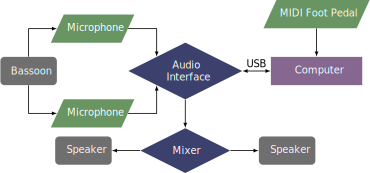

This piece was written for Eryn Oft in 2013, and it is unique because the bassoonist plays the entire piece without a reed. The piece can be obtained by contacting the composer at his website.
This piece requires two microphones and an audio interface with four outputs, although one with two outputs would also be possible as the third and fourth outputs are only the bassoon's unprocessed sound. A MIDI controller pedal is also necessary for the performer to advance the patch, which advances when it receives a value of 127 on any controller. Alternatively, an electronics performer could advance the patch with the spacebar. The patch is designed for the outputs of the interface to go to a mixer where the balance can be adjusted before being sent to stereo speakers.
The setup for this piece is shown below. 
The patch for Crook'd is shown in the screenshot section. The patch features a button that opens a window with setup instructions, the ability to select cues for rehearsal purposes, and audio settings for choosing appropriate hardware devices. Once the correct device settings are selected, the performer only needs to press the button with the sound icon to turn on the audio system. Then the piece begins when the patch operator presses the spacebar or the performer presses the MIDI pedal.
Recording on SoundCloud.
This piece is quite difficult from a technical standpoint. Despite not using a reed for pitches, the performer has to inhale, exhale, flutter-tongue, slap tongue, and speak syllables through the bocal. Getting accustomed to the notation is one of the main challenges of this piece. It is also rhythmically very complex, featuring tuplets of sizes up to fifteen. The electronics part is not too difficult, but some of the cues are very close together. The score has helpful markings letting the performer know when a cue will record the bassoon's sound, as well as a staff with some indication about what the electronics are doing. Overall, the technical demands of this piece put it out of range for undergraduate students.
This piece fits very well in the avant-garde style, especially since there is little to no melody from definite pitches. This piece would likely be hard to listen to for audiences unaccustomed to more experimental music.
©2024 by Benjamin Bradshaw
Logo ©2024 by Hannah Bradshaw